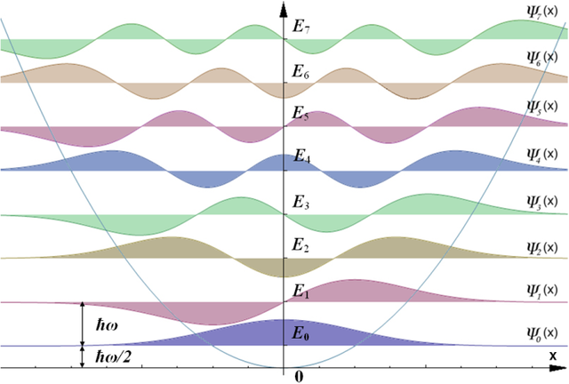

Ejercicios de Clase 11
Graficar para valores de \(k=1,2,5,10\) y como función del límite superior \(L\), el valor de la integral:
con rango de variación de \(L\) entre \(0\) y \(2 \pi\).
En el archivo
palabras.words.gzhay una larga lista de palabras, en formato comprimido. Siguiendo la idea del ejemplo dado en clases realizar un histograma de las longitudes de las palabras.Modificar el programa del ejemplo de la clase para calcular el histograma de frecuencia de letras en las palabras (no sólo la primera). Considere el caso insensible a la capitalización: las mayúsculas y minúsculas corresponden a la misma letra (‘á’ es lo mismo que ‘Á’ y ambas corresponden a ‘a’).
Utilizando el mismo archivo de palabras, Guardar todas las palabras en un array y obtener los índices de las palabras que tienen una dada letra (por ejemplo la letra ‘j’), los índices de las palabras con un número dado de letras (por ejemplo 5 letras), y los índices de las palabras cuya tercera letra es una vocal. En cada caso, dar luego las palabras que cumplen dichas condiciones.
En el archivo
colision.npyhay una gran cantidad de datos que corresponden al resultado de una simulación. Los datos están organizados en trece columnas. La primera corresponde a un parámetro, mientras que las 12 restantes corresponde a cada una de las tres componentes de la velocidad de cuatro partículas. Calcular y graficar:la distribución de ocurrencias del primer parámetro.
la distribución de ocurrencias de energías de la tercera partícula.
la distribución de ocurrencias de ángulos de la cuarta partícula, medido respecto al tercer eje.
la distribución de energías de la tercera partícula cuando la cuarta partícula tiene un ángulo menor a 90 grados con el tercer eje.
Realizar los cuatro gráficos utilizando un formato adecuado para presentación (charla o poster).
Leer el archivo
colision.npyy guardar los datos en formato texto con un encabezado adecuado. Usando el comando mágico%timeito el módulo timeit, comparar el tiempo que tarda en leer los datos e imprimir el último valor utilizando el formato de texto y el formato originalnpy. Comparar el tamaño de los dos archivos.El submódulo scipy.constants tiene valores de constantes físicas de interés. Usando este módulo compute la constante de Stefan-Boltzmann \(\sigma\) utilizando la relación:
\[\sigma = \frac{2 \pi^5 k_B^4}{15 h^3 c^2}\]Confirme que el valor obtenido es correcto comparando con la constante para esta cantidad en
scipy.constantsUsando Scipy y Matplotlib grafique las funciones de onda del oscilador armónico unidimensional para las cuatro energías más bajas (\(n=1,2,3,4\)), en el intervalo \([-5,5]\). Asegúrese de que están correctamente normalizados.
Las funciones están dadas por:
donde \(H_{n}\) son los polinomios de Hermite, y usando \(\omega = 2\).
Trate de obtener un gráfico similar al siguiente (tomado de wikipedia. Realizado por By AllenMcC. - File:HarmOsziFunktionen.jpg, CC BY-SA 3.0)
{kind=link}